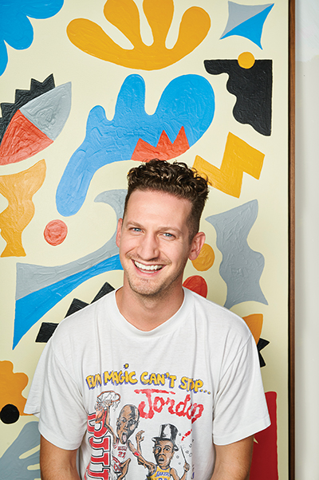

Will Bryant
Will Bryant is an artist, designer, and illustrator based in Austin, Texas. He would like to think that he makes fun, exuberant, and sometimes humorous work. In addition to collaborating with brands, he also continues to develop a body of work in the form of painting, drawing, printmaking, and sculpture.
Growing up in Texarkana, TX he spent his time playing sports, watching Pee Wees Playhouse, and making lame jokes. Some things never change.
He studied graphic design at Mississippi State University (2008) and received an MFA in Contemporary Art Practice from Portland State University (2013).